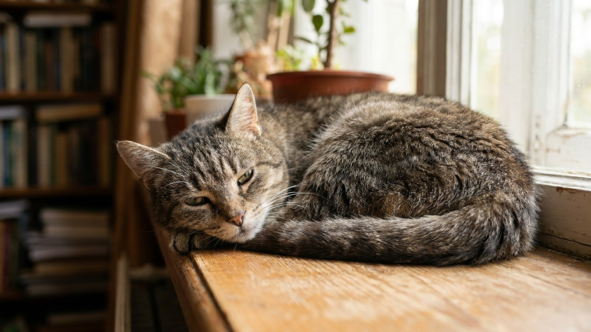

Домашняя кошка сегодня живёт 15-18 лет, а при хорошем уходе — до 20-22. Это значит, что половину жизни кошка — «возрастная». С 10 лет начинается период, в котором тот же уход, что был в 5, уже не работает. Менять надо корм, частоту визитов к врачу, среду в квартире, иногда даже отношение. Семь признаков, по которым ясно — пора, и что именно делать.
🐾 Здоровье питомца под контролем
AI-ветеринар, дневник здоровья и персональные советы для вашего питомца — установите AnimaLife бесплатно.
Современная ветеринарная гериатрия делит жизнь кошки на четыре периода:
Главный сдвиг — между 10 и 12 годами. Это «точка перенастройки» для хозяина.
Старый кот часто ест меньше — теряет обоняние, чувствительность к вкусу. Иногда ест больше при потере веса (классический симптом гипертиреоза — заболевания щитовидки, встречается у 10% кошек старше 10).
Что делать:
Артрит — самая недодиагностируемая болезнь у кошек. По исследованию American Animal Hospital Association 2024, остеоартрит присутствует у 90% кошек старше 12 лет, но диагностируется только у 15%. Кошки умеют скрывать боль до последнего.
Что замечать:
Что делать: к врачу, обсудить противоартритные препараты (фрунветмаб — революционный препарат Solensia, одобрен в РФ с 2024, переносится отлично), снизить высоту лотка, поставить ступеньки/пуфики к любимым местам, оптимизировать вес.
Полидипсия + полиурия = классический симптом нескольких возрастных болезней:
Что делать: к врачу, кровь и моча. Не ждать «само пройдёт». Все три заболевания контролируются, но не вылечиваются — чем раньше начали, тем дольше живёт кошка.
Старый кот может стать более общительным или, наоборот, замкнутым. Появляется «кошачья деменция» — когнитивная дисфункция (CDS). Кошка дезориентируется ночью, мяукает в пустоту, ходит мимо лотка, не узнаёт хозяев.
Что делать: создать предсказуемую среду — не двигать миски, лоток, лежанку; ночник в коридоре; ритуалы (еда, сон, ласка — в одно время). Препараты: пропентофиллин (Vivitonin), фосфатидилсерин в добавках, иногда мемантин по назначению невролога.
Старая шерсть тусклеет, становится грубее, появляется перхоть. Часто пропадает «уход за собой» (см. артрит). Если шерсть редеет очагами — это уже патология, не возраст.
Что делать: вычёсывать вместо кошки (особенно зад, хвост, спина), добавить в рацион омега-3 (рыбий жир в капсулах, например, Animal Plenty Omega), мыть только при необходимости тёплой водой и шампунем для пожилых кошек.
Старая кошка спит 18-20 часов в сутки (норма для взрослой — 14-16). Это нормально. НЕнормально:
Кошка вдруг начала писать на одеяло (стресс/боль/инфекция мочевыводящих), начала закапывать миску после еды (тошнота, проблемы с ЖКТ), стала прятаться в нетипичных местах (часто кошки прячутся, когда им плохо — инстинкт). Все эти изменения — не «вредничает», а сигнал.
Универсальное правило сеньорки: любое новое поведение, появившееся после 10 лет, — повод к врачу в течение недели. Не наблюдать месяцами.
🐾 Первая помощь — всегда под рукой
AnimaLife подскажет, что делать в тревожной ситуации с питомцем ещё до визита к врачу. Откройте в один тап.
Не «жалеть, не беспокоить старичка» — это самая частая ошибка. Старый кот нуждается в большем внимании, а не в меньшем. Не пропускать визиты к врачу под предлогом «он уже старенький, что там лечить». Возраст не диагноз. Не «отказываться от лечения», потому что «всё равно скоро умрёт». Современная гериатрия даёт кошке качественные дополнительные 3-5 лет жизни.
И самое главное — не относиться к стареющему коту как к «отработанному». Это та же кошка, которая 10-15 лет была частью семьи. Она заслужила, чтобы её последние годы были не «доживанием», а полноценной жизнью с медицинской поддержкой, хорошим кормом и любовью.